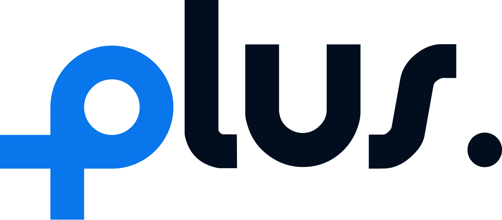

IoT & Embedded Systems
Hands-on with embedded experimentation, sensor data acquisition, and system evaluation. Built IoT water-clarity monitoring and flood-detection deployed in the field.
Data Scientist · AI & Backend Engineer
I’m Rifqi Sigwan Nugraha — an Information Technology graduate from Telkom University, Bank Indonesia Scholar, and IEEE-published researcher. I architect data pipelines, integrate machine-learning models, and build scalable AI & IoT-powered platforms.

Results-driven technologist with a strong foundation in data science, artificial intelligence, and embedded/IoT engineering. I’ve shipped everything from intelligent video-analytics backends to IoT systems serving real communities — leaning on Python and PostgreSQL to translate messy data into clear, actionable insight. I care about systems that are robust under the hood and quiet on the surface, and I enjoy working across design, engineering, and strategy to ship things that matter.
Three areas where engineering depth and curiosity meet — from sensors in the field to models in the cloud.
Hands-on with embedded experimentation, sensor data acquisition, and system evaluation. Built IoT water-clarity monitoring and flood-detection deployed in the field.
Backend services, RESTful APIs, and data pipelines in Python. Full-stack work with Next.js & PostgreSQL, plus admin platforms for real operational workflows.
Machine-learning integration and synthetic-data generation for smart agriculture (IEEE-published). Certified in Generative AI by Google; exploring cloud-native AI solutions.
Directed end-to-end digital-platform development, aligning the product roadmap with market needs and synchronizing design, development, and marketing workstreams. Selected for the SIAP 2025 Acceleration Program by Kementerian Ekonomi Kreatif.
Supported research across Embedded Systems, AI, and IoT — sensor data acquisition, experimental validation, and technical documentation. Led end-to-end IoT deployment for water-monitoring and flood-detection impacting ~300 households, and redesigned a BUMDes–PDAM administrative workflow into a user-centered web platform.
Built backend services, robust data pipelines, and RESTful API endpoints for an AI surveillance dashboard. Coordinated cross-functional teams and monitored performance metrics to keep uptime steady through deployment.
Managed the daily operations and welfare of mosque-dormitory residents — coordinating duty rosters, maintaining stakeholder relations, and keeping a large community running smoothly.

SIAP 2025 · KemenekrafA digital-platform startup selected for the SIAP 2025 Acceleration Program by Kementerian Ekonomi Kreatif. As co-founder, I direct end-to-end platform development — aligning the product roadmap with market needs and synchronizing design, engineering, and marketing into one rhythm.
Backend engineer for an AI coffee-assessment platform (qoffea.cloud) by PT Telkom Indonesia. Top 50 national finalist.
Backend for an AI surveillance system supporting real-time video analytics and alert pipelines.
Full-stack dashboard ecosystem for a mosque & university, architected around a centralized admin control page.
IoT flood early-warning & water-clarity monitoring deployed in Desa Mukai Tengah, Kerinci. Top 163 National Finalist, ~300 households served.
User-centered admin web platform digitizing water-payment management and BUMDes operational workflows.
Academic-planning app with GPA computation and predictive grade projections. Registered copyright (No. 000925616).
Abstract A Monte Carlo-based synthetic-data framework for durian cultivation within a smart-farming IoT ecosystem. By simulating environmental variables and crop-growth patterns, it tackles the scarcity of real-world agricultural datasets in tropical regions — integrating IoT sensor data with stochastic modeling to produce high-quality synthetic datasets for training precision-agriculture ML models.
Bank Indonesia Scholarship Awardee (2024–2026) · Innovillage National Finalist (2023) · Gemastik 2025 participant.
Provincial Finalist — National Science Olympiad (Astronomy).
National academic-excellence & leadership scholarship — one of Indonesia’s most competitive.
Top 163 National Finalist for IoT water-monitoring & flood detection in Kerinci, Jambi (~300 households served).
National finalist for Qoffea, an IoT + AI coffee quality-assessment innovation.
Provincial finalist in Astronomy (KSN) — strong analytical & scientific aptitude.
Open to data science, AI, and backend roles — and to collaborations that turn data into real-world impact.
rifqisigwannugraha@gmail.com